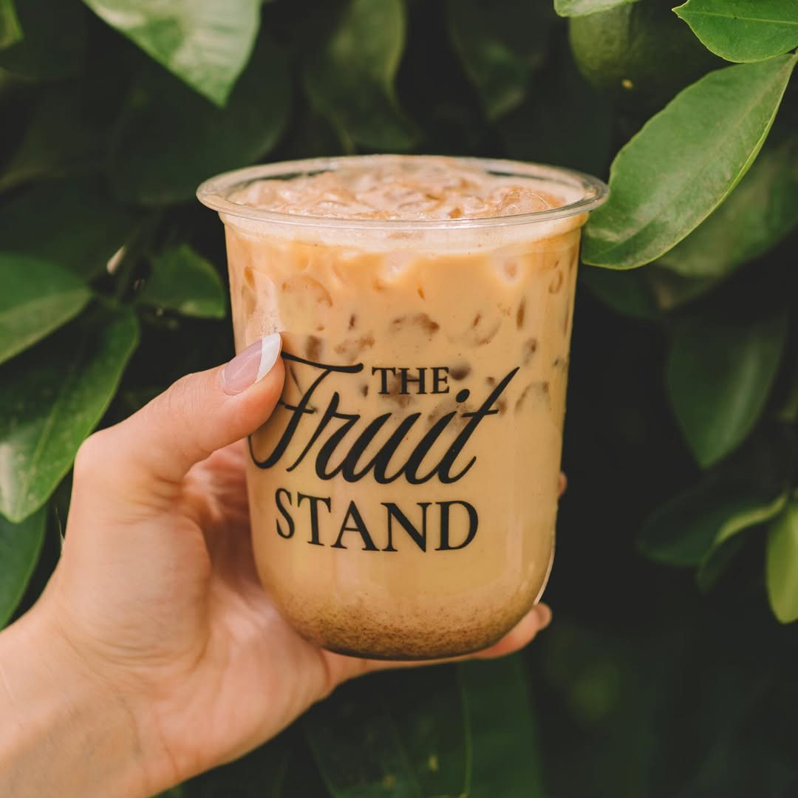
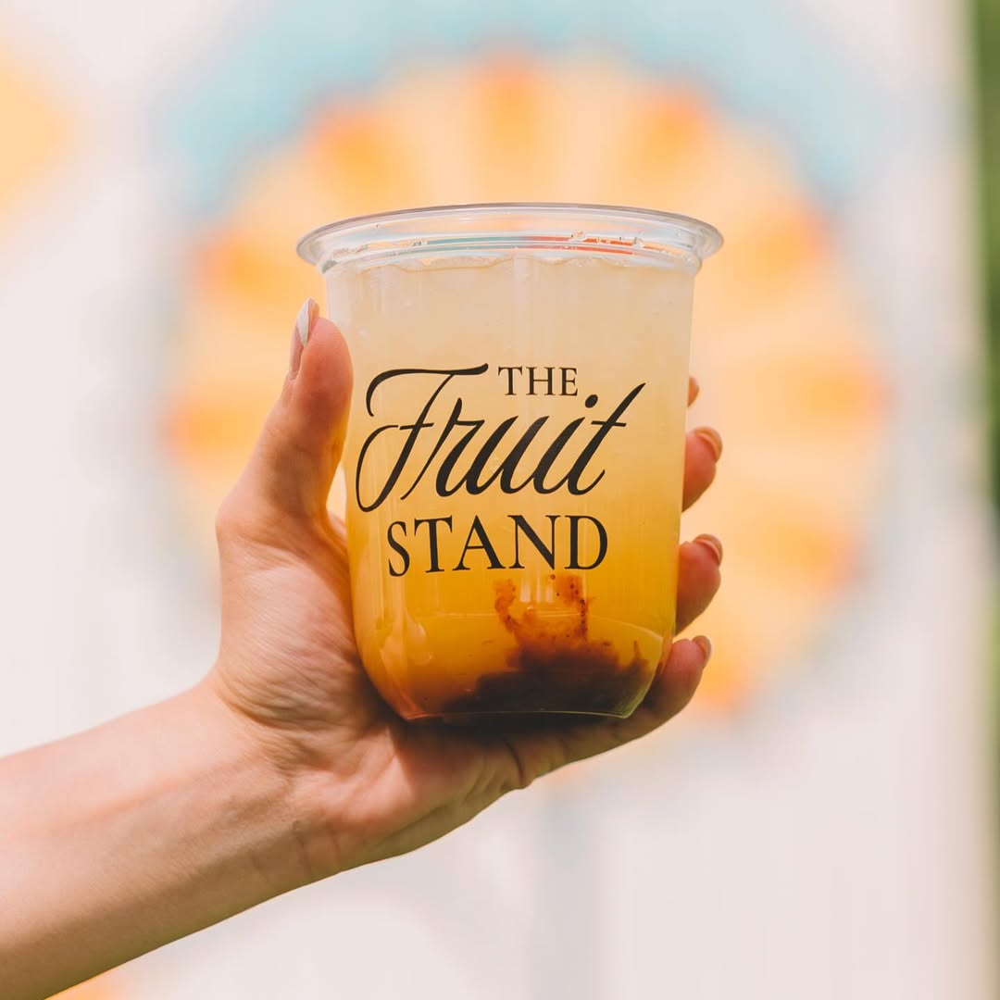
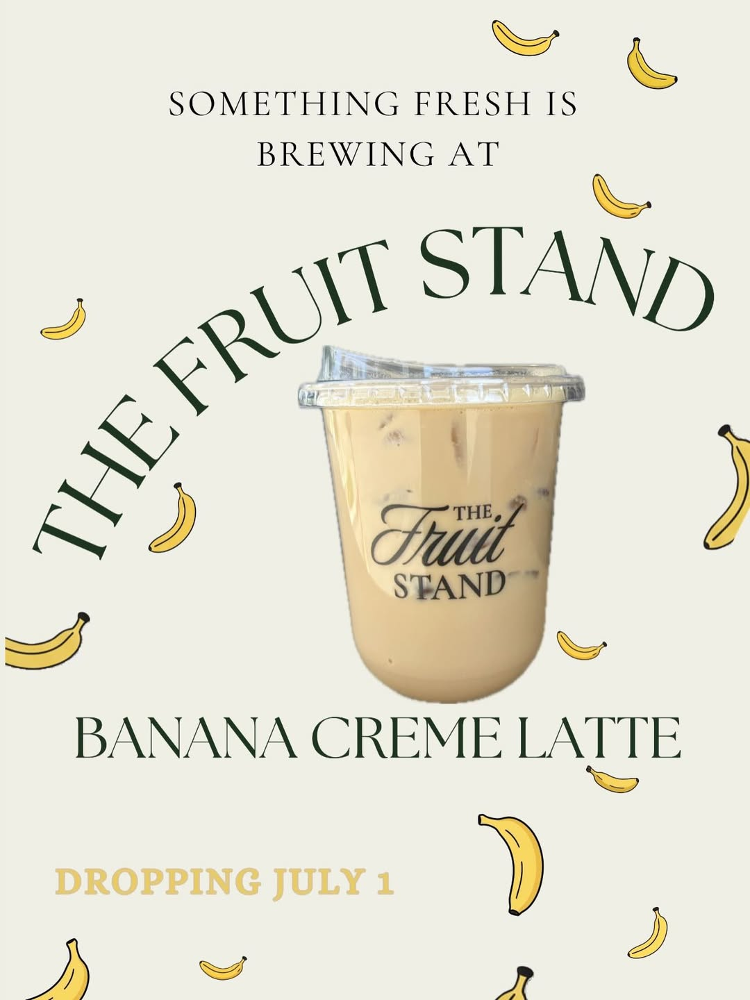
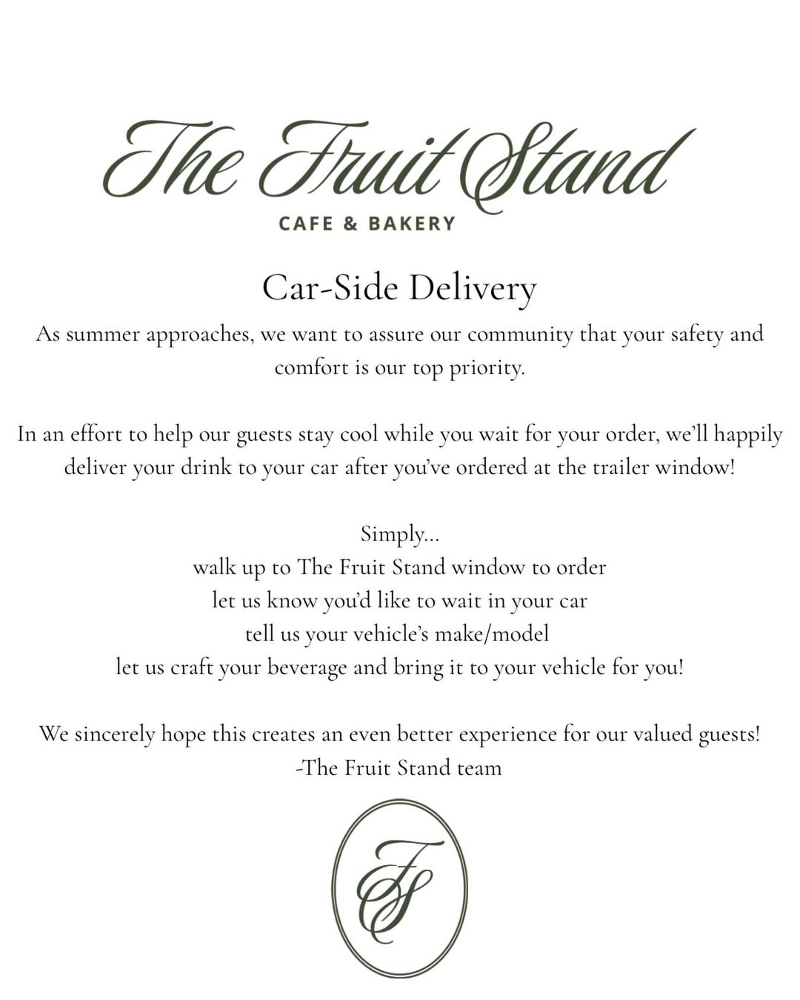
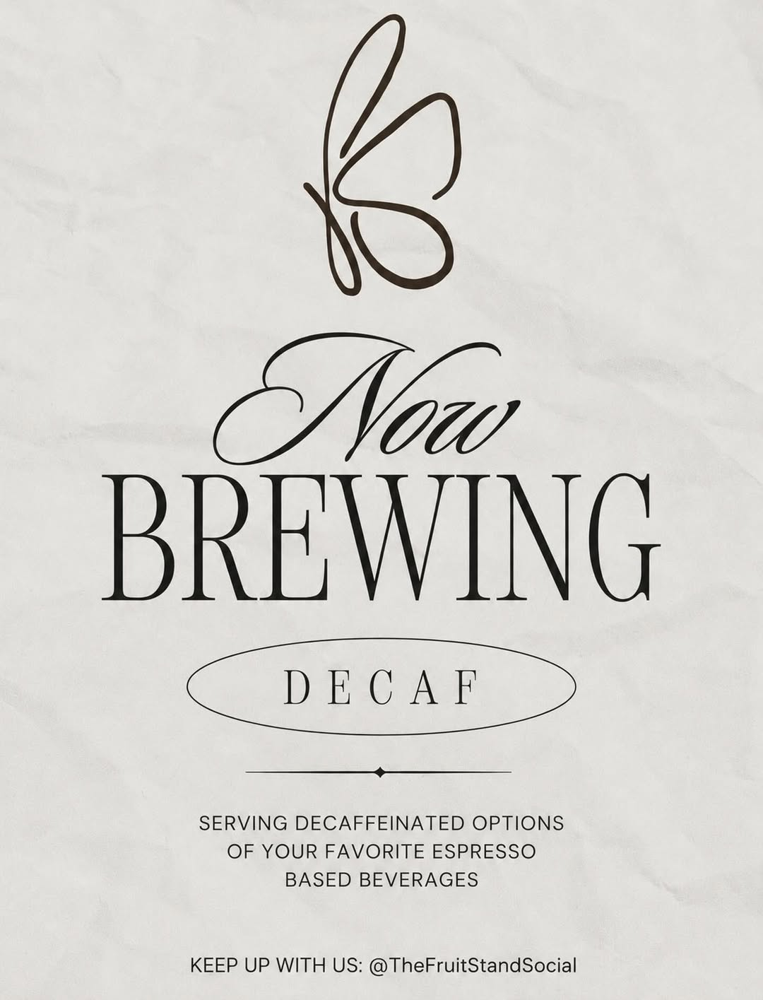
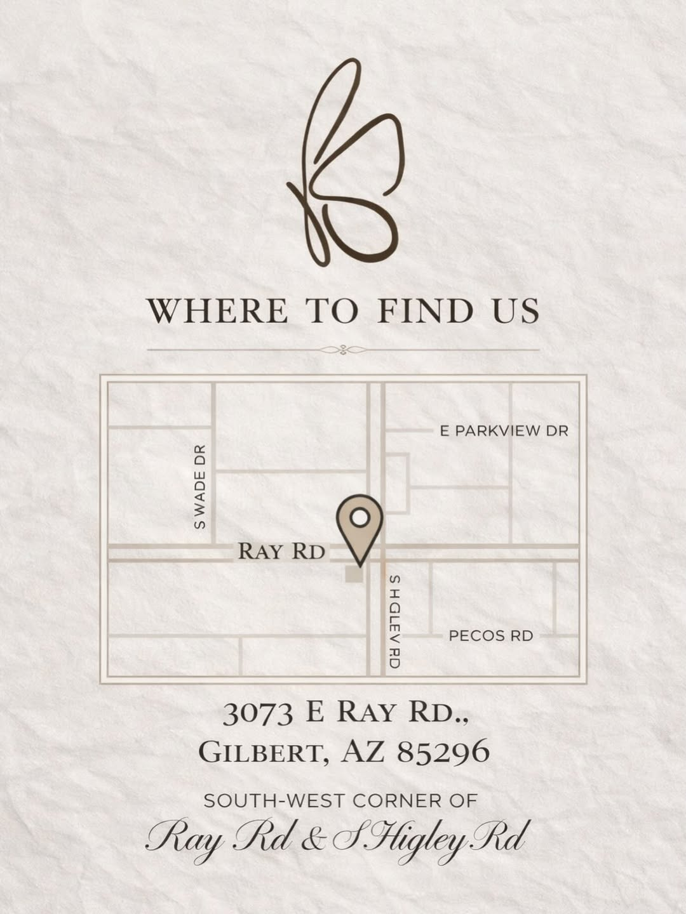
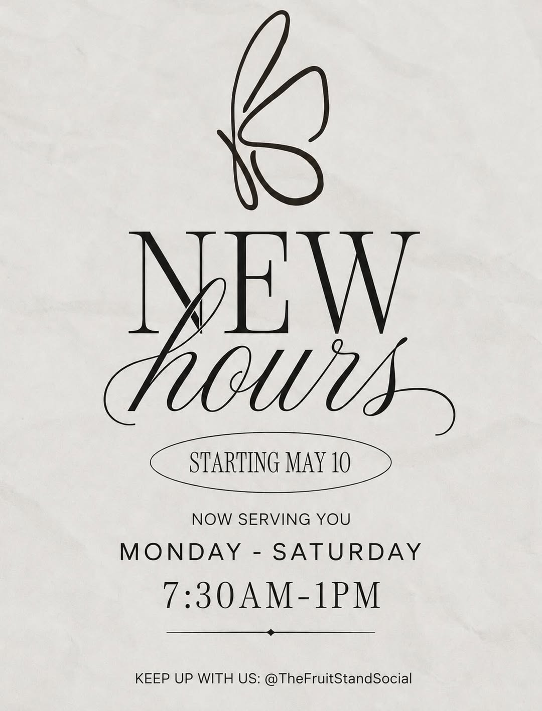

Strawberry Shortcake
Strawberry purée, vanilla cream, and white chocolate.
Café & Bakery • Gilbert, Arizona
The Fruit Stand serves handcrafted house lattes, espresso, matcha, and seasonal café favorites from their beautiful trailer near Higley and Ray.



Seasonal spotlight
From banana crème to strawberry shortcake, The Fruit Stand creates specialty drinks that feel as styled and intentional as the brand itself.
See the latest specialsCar-side service
On warm Arizona days, guests can walk up to the trailer window, place an order, share their vehicle make and model, and wait comfortably in the parking lot while their beverage is brought to their car.
Walk up to The Fruit Stand trailer window.
Place your order and ask for car-side service.
Share your vehicle make/model and relax nearby.

From the stand

Where to find us
Find The Fruit Stand at 3073 E Ray Rd, Gilbert, AZ 85296, on the southeast corner of Ray Rd and S. Higley Rd.


Visit the camper
Stop by The Fruit Stand at Epicenter, follow along for menu updates, and look for the elegant green-and-gold camper serving café favorites in Gilbert.